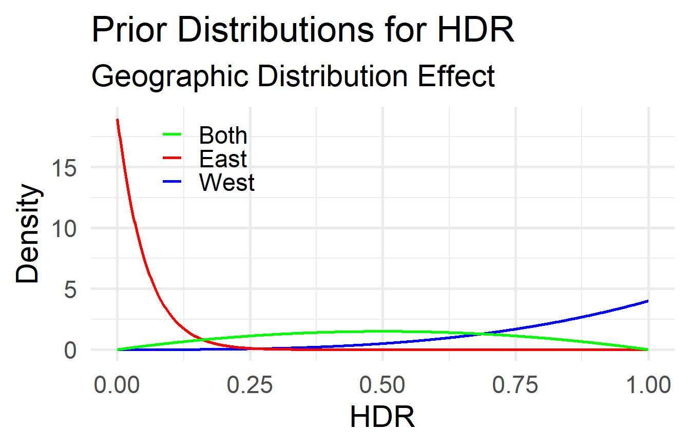
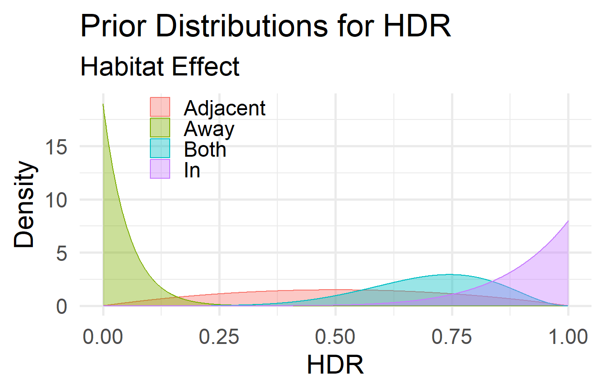
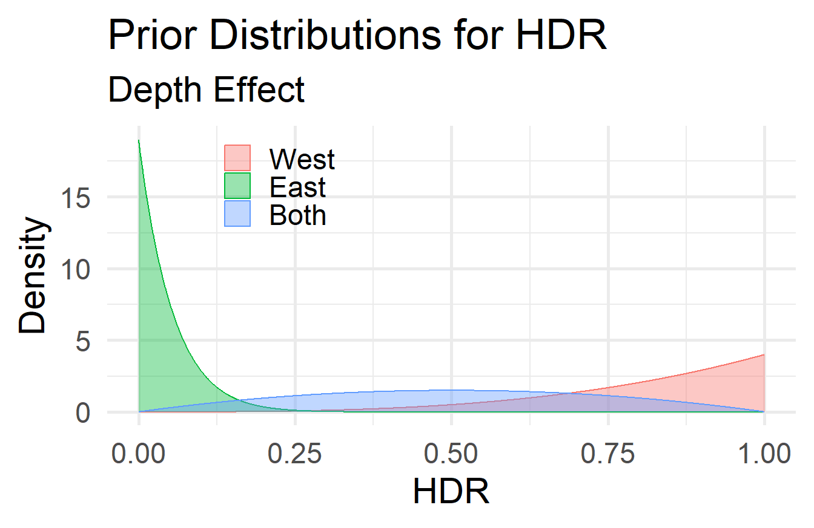
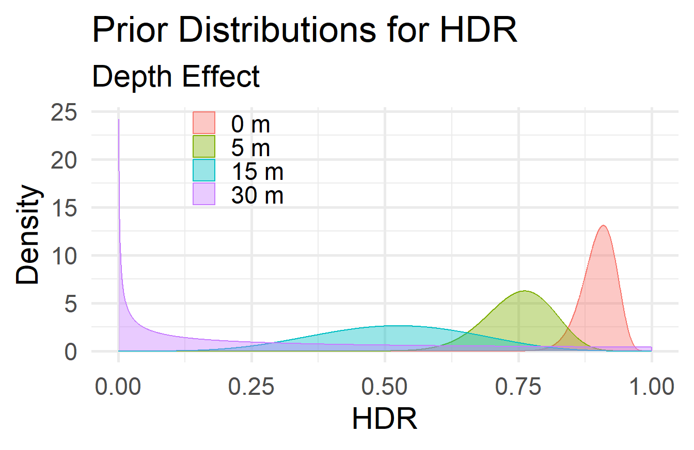
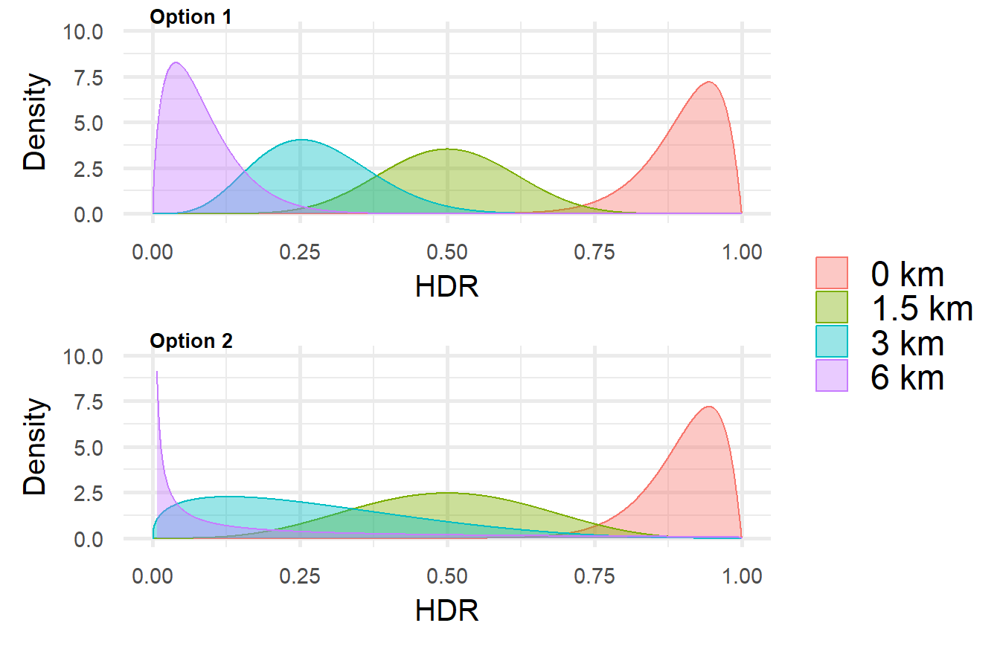
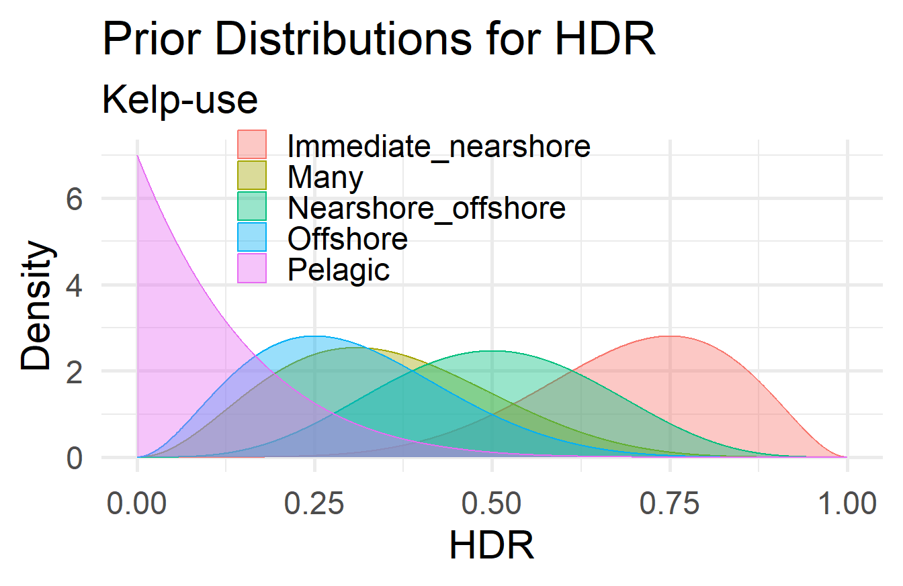
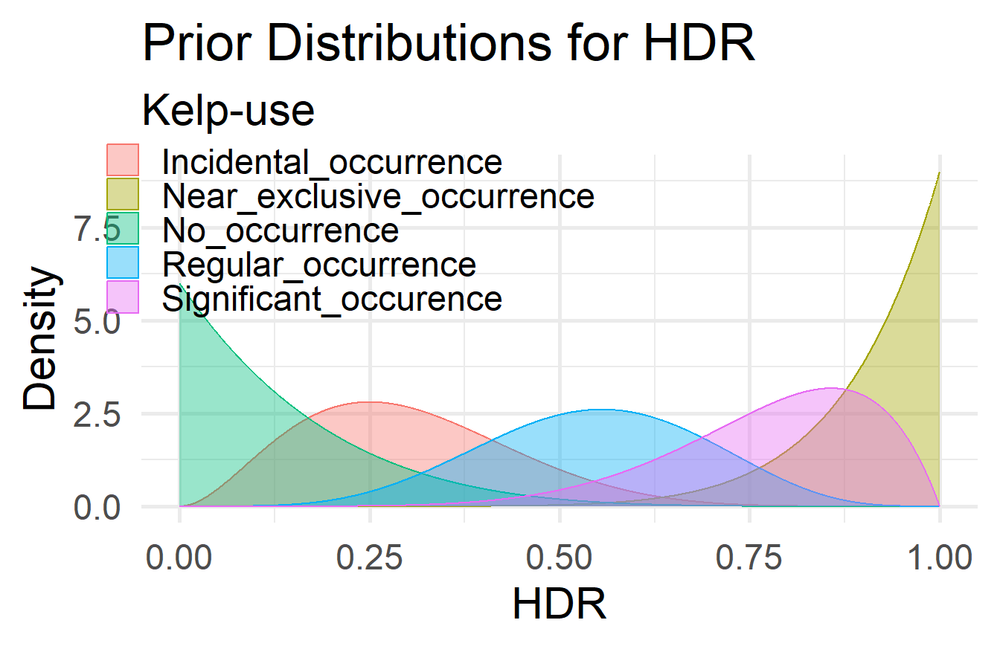
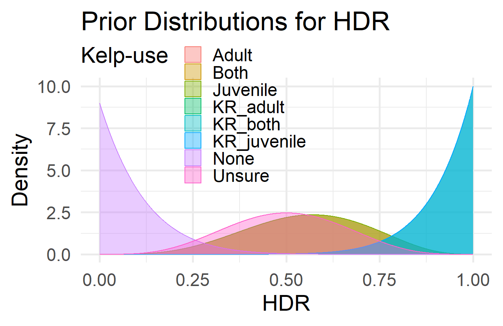
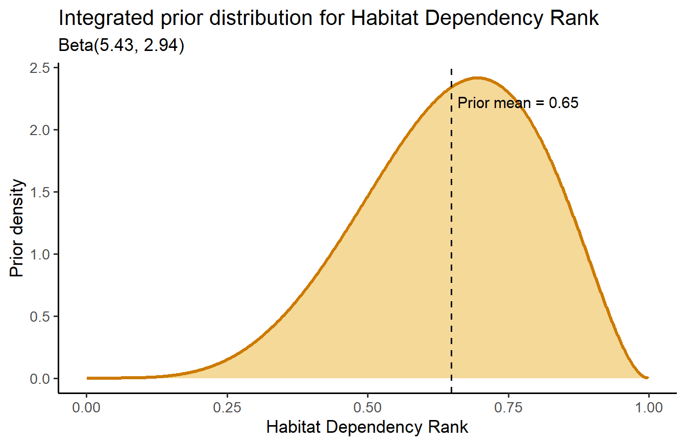

Kelp Forest Dependence of South African Fish Species
What is this?
I want to generate a Bayesian framework mode, with Beta distributions for prior and posterior outputs. Using the evidence hierarchy in Smit et al. (in review), habitat and trophic routes will be treated separately. These routes will not overlap in the analysis, dietary analyses will be only be used in the trophic route and habitat assessments will be evaluated in the habitat route. The model will comprise of 5 different qmds that define the structure for each route. (Likelihood i am still stuck on and we need to talk on this more once once we get a chance please free up your schedule).
The qmds will comprise the following:
- priors (trophic and habitat),
- likelihood function (i need help with this, how will I join multiple papers?, similar to the integration probably, i will add weights to papers based on the criteria used in my honours- I will upload this thought process on GitHub)
- posteriors (trophic and habitat).
This qmd in particular will be assessed to assign prior parameters to assess habitat dependency of line-fish on kelp forests. Currently it consists of 7 questions in totality:
- q1-3 forms the basis of kelp accessibility (these questions will place species in regions near or outside of kelp forests, without inferences on kelp occurrence or habitat use by species)
- q4-5 forms the basis of kelp occurrence - this places importance on species occurrence in kelp and the frequency their occurrence in kelp forests (leaning towards occurrence and selection of species in habitats)
- q6-7 forms the basis for use and dependency - the questions will draw on use of kelp forests, if there is a repeated, significant or exclusive use of kelp (allows conclusions of dependency to be drawn). Also includes life-stage history, as ontogenetic migrations can occur across habitats, places a greater level of level into the model.
The priors for this section will be set-up in two methods: * Step 1: provides the parameters and values for Beta distributions for each parameter, which is posed as a question.
- Step 2: combines the individual parameters into a single integrated weighted prior parameter. (the weighting for each is discussed in that section and the equations are provided)
Habitat Dependency Ranking (HDR)
The Bayesian analysis framework aims to determine the HDR of line-fish on kelp forests. This will follow a methodological structure, of which priors will be first be set-up. The priors selected in this section will infer knowledge on the possible interactions line-fish have with kelp forests. Due to the lack of information there are with certain fish species, uncertainties will also be taken into consideration to provide a probabilistic estimate of the interaction occurring. Priors will be set up to account for this uncertainty and will later be integrated to include the different categories to display an overall TDR of line-fish on kelp forests.
Priors
The priors are categories that will be used to determine the possible interaction between line-fish of kelp forests. These priors will encompass factors that will touch on the boundaries and extent of fish occurrence along the coast, along with the degree of consumption of kelp or kelp associated organisms. These priors were selected based on the knowledge sourced from literature sources.
The prior represents our initial beliefs about a parameter’s effect on the TDR estimate before observing the current data. In this context, the priors will encode our expert knowledge and assumptions about the TDR based on the answers to Questions 1-x in the Survey Questionnaire. These priors will then be updated with the data (likelihood) to produce the posterior distribution, which reflects our updated beliefs about the TDR.
Each question provides qualitative information that can be quantitatively translated into prior distributions for the TDR.
Step 1: Assigning priors selection
The priors play a big role in shaping the posterior distributions. The type of prior—whether Diffuse, Weakly Informative, or Informative—reflects different levels of prior knowledge or assumptions about the parameter before seeing the data. Pay careful attention to assigning priors. A diffuse or non-informative prior is chosen to exert minimal influence on the posterior distribution and allows the data to drive the posterior in the absence of strong prior beliefs. Weakly informative priors provide some guidance without strongly biasing the posterior. They reflect a minimal level of knowledge or reasonable assumptions about the parameter’s likely range without assuming high confidence in specific values. Informative priors are used when there is strong prior knowledge or beliefs about the parameter.
Question 1: Geographic Distribution
Because the distribution of kelp forests and the availability of kelp as a food source vary between the west and east coasts (Ecklonia maxima at De Hoop) regions, fish species that are distributed in different regions along the South African coast may have different HDRs.
Select the option that best describes the geographical distribution of the fish species along the South African coast in relation to the distribution of kelp forests (Ecklonia maxima and/or Laminaria pallida). This information will help assess the species’ potential HDR on kelp.
Choices: [West | East | Both]
- [West]: The species is exclusively found in the western region of the South African (and/or Namibian) coast, which is dominated by kelp forests (Ecklonia maxima and/or Laminaria pallida). Therefore, it is likely that the species has a higher HDR on kelp, potentially even indicating an obligate dependency on kelp-derived carbon.
- [East]: The species is exclusively found along the coastline east of the eastern limit of kelp forests (east of De Hoop), where Ecklonia maxima does not occur, and kelp forests are absent (but there’s still Ecklonia radiata). Consequently, the species is expected to have a HDR close to zero (not zero due to chance of accessing E. radiata), indicating no to minimal dependency on kelp-derived carbon.
- [Both]: The species is found in both the western region (with kelp forests) and the eastern region (without kelp forests). As a result, the species may have an intermediate HDR, suggesting a facultative dependency on kelp-derived carbon, where the species utilises kelp when available but can also thrive without it.
Three dependency types are accommodated by these options. Obligate Dependency indicates that the species relies heavily on kelp-derived carbon and may not thrive without it. Facultative Dependency is when species can utilise kelp-derived carbon when available but can also survive without it. Lastly, No Dependency when a species does not rely on kelp-derived carbon and can thrive without it.
Translation into Priors:
To model a parameter like HDR, which is a proportion bounded between 0 and 1 (or 0% to 100%), use a Beta distribution. It has a flexible shape and so will allow for various levels of certainty and mean values. The Beta distribution has two shape parameters, \(\alpha\) and \(\beta\), which determine the mean (Equation 1) and variance (Equation 2) of the distribution:
\[ \mu = \frac{\alpha}{\alpha + \beta} \tag{1}\]
\[ \sigma^2 = \frac{\alpha \beta}{(\alpha + \beta)^2 (\alpha + \beta + 1)} \tag{2}\]
Example profiles of the Beta distribution for different values of \(\alpha\) and \(\beta\) are shown in Figure 1:
We can solve for α and β given the desired mean and variance.
For example, for the ‘West’ region, our desired mean is \(\mu = 0.8\), which reflects a higher HDR. We choose a variance that indicates more uncertainty (because a species simply being confined to this region offers little certainty that it has a HDR reflective of kelp usage). Since we want a wider distribution (higher uncertainty), we can choose \(\alpha\) and \(\beta\) to be smaller. A Beta(4,1) distribution can be chosen to reflect a high HDR (mean = 0.8 from Equation 3) with moderate uncertainty (variance ~0.0267 from Equation 4). The calculations are as follows:
\[\mu = \frac{4}{4 + 1} = 0.8 \tag{3}\]
\[\sigma^2 = \frac{4 \times 1}{(4 + 1)^2 (4 + 1 + 1)} = \frac{4}{25 \times 6} = \frac{4}{150} \approx 0.0267 \tag{4}\]
The priors for the ‘West,’ ‘East,’ and ‘Both’ geographic regions are therefore:
| Region | Beta Parameters (α, β) | Mean (μ) | Variance (σ²) |
|---|---|---|---|
| West | α = 4, β = 1 | μ = 0.8 | σ² ≈ 0.0267 |
| East | α = 1, β = 19 | μ = 0.05 | σ² ≈ 0.00226 |
| Both | α = 2, β = 2 | μ = 0.5 | σ² = 0.05 |
Visualising these priors helps us understand how they reflect our prior beliefs about the HDR. The priors are shown in Figure 2 and Figure 3:


Question 2: Depth
The priors for the depth effect on HDR will have to reflect the fact that species that occur at the same depth as kelp forests are more likely to have a higher HDR on kelp, and as we go into deeper water, the HDR on kelp is expected to decrease. The priors for this question are as follows:
Choices: [0 | 5 | 15 | 30 | 60]
Set up a continuous series of Beta distributions as priors for the effect of depth from shallow to deep water on the HDR on kelp. This reflects the reasoning that species occurring within shallow water could have a higher HDR on kelp, with a decreasing response as depth increases.
following AJs distance formula
Step 1: Define the Prior Mean HDR as a function of Depth
We will start by modelling the expected mean HDR as a function of depth from the shore (D). Since kelp dominance and HDR decrease with increasing depth, an exponential decay function is appropriate.
\[ mean\_HDR(D) = M \cdot e^{(-k \cdot D)} \]
Where:
- M is the maximum expected HDR at the surface (D = 5m)
- k is the decay constant determining how quickly HDR decreases with depth
- D is depth (in m)
Choosing M and k :
- Set M = 0.9 to represent a high HDR at the shore
- Determine k so that D = 15m (intermediate water), the mean HDR reflects the diminishing importance of kelp. Suppose we expect mean HDR to be 0.75 at this point (kelp is still present here and forests are prevalent)
Calculate k:
\[ 0.75 = 0.9 \cdot e^{(-k \cdot 15)} \]
We start with the equation:
\[ 0.75 = 0.9 \cdot e^{-k \cdot 15} \]
\[ e^{-k \cdot 15} = \frac{0.75}{0.9} \]
\[ -k \cdot 15 = \ln\left(\frac{0.75}{0.9}\right) \]
\[ k = -\frac{1}{15} \cdot \ln\left(\frac{0.75}{0.9}\right) \approx 0.0122 \]
Resulting Function:
\[ mean\_HDR(D) = 0.9 \cdot e^{-0.0122 \cdot D} \]
Note to consider: The distance-decay model assumes exponential decay of kelp influence, but we need to empirically validate this assumption.
Step 2: Define the Shape Parameters α and β
Next, we’ll express α and β as functions of distance decay to shape the Beta distributions accordingly.
Option 1: Constant Total Information
Assuming a constant total information (α + β) reflects consist confidence in our prior across distances.
- Set α + β = 20 for moderate confidence
- calculate α and β at each distance
\[ α(D) = mean\_HDR(D) \cdot (α+β) \]
\[ β(D) = (1 - mean\_HDR(D)) \cdot (α+β) \]
Note: The total information parameter (α + β = 20) seems arbitrarily chosen.
Option 2: Decreasing Total Information
Alternatively, if uncertainty increases with distance, let (α+β) decrease exponentially:
\[ (α + β) = A \cdot e ^{-h \cdot D} \]
Where:
- A is the initial information weight at D = 5.
- h controls the rate of decrease of information.
We need to select appropriate values for A and h to model the decreasing confidence.
- Initial information (A): Let’s set A = 20 to match the initial total information used in Option 1.
- Decay Rate (h): We’ll choose h such that the total information halves at D = 15m (shallow water).
Using the half-life formula for exponential decay:
\[ D_{1/2} = \frac{In(2)}{h} \]
Solving for h:
\[ h = \frac{In(2)}{D_{1/2}} = \frac{In(2)}{15} \approx 0.0462 \]
Step 3: Compute α and β at Specific Depth
Let’s calculate α and β at various distances using Option 1.
At D = 0m
\[ mean\_HDR(0) = 0.1 \]
\[ α(0) = 0.1 \cdot 20 = 2 \]
\[ β(0) = (1-0.1) \cdot 20 = 18 \]
At D = 5m
\[ mean\_HDR(5) = 0.9 \]
\[ α(5) = 0.9 \cdot 20 = 18 \]
\[ β(5) = (1-0.9) \cdot 20 = 2 \]
At D = 15m
\[ mean\_HDR(15) = 0.75 \]
\[ α(15) = 0.75 \cdot 20 = 15 \]
\[ β(15) = (1-0.75) \cdot 20 = 5 \]
At D = 30m
\[ mean\_HDR(30) \approx 0.624 \]
\[ α(30) = 0.624 \cdot 20 = 12.48 \]
\[ β(30) = (1-0.624) \cdot 20 = 7.52 \]
At D = 60m
\[ mean\_HDR(60) = 0.433 \]
\[ α(60) = 0.433 \cdot 20 = 8.66 \]
\[ β(60) = (1-0.433) \cdot 20 = 11.34 \]
Now let us calculate the total information (α + β) for Option 2 and model the total information as decreasing exponentially with depth from the shore. This will reflect as increasing uncertainty as we move offshore.
Using the exponential decay formula:
\[ (α + β)(D) = 20 \cdot e ^{-0.0462 \cdot D} \]
Calculate at different depths:
At D = 0m:
\[ (α+β)(0) = 20 \cdot e^{-0} = 20 \]
At D = 5m:
\[ (α+β)(5) = 20 \cdot e^{-0.0462 \cdot 5} \approx 10.001 \]
At D = 15m:
\[ (α+β)(15) = 20 \cdot e^{-0.0462 \cdot 15 } \approx 2.501 \]
At D = 30m:
\[ (α+β)(30) = 20 \cdot e^{-0.1386 \cdot 30} \approx 0.313 \]
Step 4: Define the Beta Distributions
Now we need to defined the Beta distributions at each depth
(Option 1):
- D = 0m: Beta(α = 18, β = 2)
- D = 5m: Beta(α = 15, β = 5)
- D = 15m: Beta(α = 10.42, β = 9.58)
- D = 30m: Beta(α = 6.02, β = 13.98)
These distributions reflect a high HDR at shallow water that decreases with increasing depth.
Similarly, we need to set up the Beta distribution for Option 2.
Using the mean HDR function:
\[ mean\_HDR(D) = M \cdot e ^{-k \cdot D} \]
Where:
- M = 0.9 (maximum expected HDR at shore)
- k = 0.0365 (decay constant for mean TDR)
Calculate α and β at different distances:
At D = 0m
- mean_HDR(0) = 0.1 · e-0 = 0.1
- Total Information: (α + β) = 20
- α(0) = 0.1 · 20 = 18 and β(0) = (1 - 0.1) · 20 = 2
At D = 5m
- mean_HDR(5) = 0.9 · e-0.0365 · 5 \(\approx\) 0.75
- Total Information: (α + β) = 10
- α(5) = 0.75 · 10 = 7.5 and β(5) = (1 - 0.75) · 10 = 2.5
At D = 15m
- mean_HDR(15) = 0.9 · e-0.0365 · 15 \(\approx\) 0.521
- Total Information: (α + β) = 2.5
- α(15) = 0.52 · 2.5 \(\approx\) 1.3 and β(15) = (1 - 0.52) · 2.5 \(\approx\) 1.2
At D = 30m
- mean_HDR(30) = 0.9 · e-0.0365 · 30 \(\approx\) 0.301
- Total Information: (α + β) \(\approx\) 0.31
- α(30) = 0.301 · 0.31 \(\approx\) 0.09 and β(30) = (1 - 0.301) · 0.31 \(\approx\) 0.22
The table below summaries the calculated values for Option 2
| Depth (m) | Mean HDR | Total Information (α+β) | α | β |
|---|---|---|---|---|
| 0 | 0.9 | 20 | 18 | 2 |
| 5 | 0.75 | 10 | 7.5 | 2.5 |
| 15 | 0.521 | 5 | 1.3 | 1.2 |
| 30 | 0.301 | 2.5 | 0.09 | 0.22 |
The Beta distributions at these depths are plotted in the figure below

Question 3: Distance from the shore
The priors for the distance from the shore effect on HDR will have to reflect the fact that species that occur closer to the shore are more likely to have a higher TDR on kelp, and as we move further offshore, the TDR on kelp is expected to decrease. The priors for this question are as follows:
Choices: [0 km |1.5 km |3 km |6 km ]
Set up a continuous series of Beta distributions as priors for the effect of distance from the shore on the HDR on kelp. This reflects our reasoning that species closer to the shore could have a higher HDR on kelp, with a decreasing trend as we move further offshore. (As with the other questions, this is a belief implying we have no actual evidence at this stage. Later, specific evidence will be used to update these (weakly-informative) priors.)
Step 1: Define the Prior Mean HDR as a Function of Distance
We’ll start by modelling the expected mean HDR as a function of distance from the shore (d). Since kelp dominance and TDR decrease with distance, an exponential decay function is appropriate.
\[ mean\_HDR(d) = M \cdot e^{(-k \cdot d)} \]
Where:
- M is the maximum expected HDR at the shoreline (d = 0km)
- k is the decay constant determining how quickly HDR decreases with distance
- d is distance (in km)
Choosing M and k :
- Set M = 0.9 to represent a high TDR at the shore
- Determine k so that d = 1.5km (edge of nearshore), the mean HDR reflects the diminishing importance of kelp.
Calculate k:
\[ 0.5 = 0.9 \cdot e^{(-k \cdot 1.5)} \]
We start with the equation:
\[
e^{(-k \cdot 1.5)} = \frac{0.5}{0.9}
\]
\[
-k \cdot 1.5 = \ln\left(\frac{0.5}{0.9}\right)
\]
\[
k = - \frac{1}{1.5}\ln\left(\frac{0.7}{0.9}\right) \approx 0.3919
\]
Resulting function:
\[
mean\_TDR(d) = 0.9 \cdot e^{-0.3919 \cdot d}
\]
Note to consider: The distance-based model assumes exponential decay of kelp influence, but we need to empirically validate this assumption.
Step 2: Define the Shape Parameters 𝛼 and 𝛽
Next, we’ll express α and β as functions of distance to shape the Beta distribution accordingly.
Option 1: Constant Total Information
Assuming a constant total information (𝛼 + 𝛽) reflects consistent confidence in our prior across distances.
• Set𝛼 +𝛽 =20 for moderate confidence. • Calculate α and β at each distance:
\[
a(d) = mean\_TDR(d) \cdot (𝛼 + 𝛽 )
\]
\[
𝛽(d) = (1 - mean\_TDR(d) \cdot (𝛼 + 𝛽 )
\]
Note: The total information parameter (𝛼 + 𝛽 = 20) seems arbitrarily chosen.
Option 2: Decreasing Total Information
Alternatively, if uncertainty increases with distance, let (𝛼 + 𝛽) decrease exponentially:
\[
(𝛼 + 𝛽)(d) = A \cdot e^{-h \cdot d}
\]
Where:
- 𝐴 is the initial information weight at 𝑑 = 0.
- ℎ controls the rate of decrease in information.
We need to select appropriate values for 𝐴 and ℎ to model the decreasing confidence.
- Initial Information (𝐴): Let’s set 𝐴 = 20 to match the initial total information used in Option 1.
- Decay Rate (ℎ): We’ll choose ℎ such that the total information halves at 𝑑 = 1.5km (edge of the nearshore area).
Using the half-life formula for exponential decay
\[
d_{1/2} = \frac{ln(2)}{h}
\]
Solving for h:
\[
h = \frac{ln(2)}{d_{1/2}} = \frac{ln(2)}{1.5} \approx 0.4621
\]
Step 3: Compute α and β at Specific Distances
Let’s calculate 𝛼 and 𝛽 at various distances using Option 1.
At *d** = 0km:
\[ mean\_HDR(0) = 0.9 \]
\[ α(0) = 0.9 \cdot 20 = 18 \]
\[ 𝛽(0) = (1 - 0.9) \cdot 20 = 2 \]
At d = 1.5km:
\[ mean\_HDR(1.5) = 0.5 \]
\[ α(1.5) = 0.5 \cdot 20 = 10 \]
\[ 𝛽(1.5) = (1 - 0.5) \cdot 20 = 10 \]
At d = 3km:
\[ mean\_HDR(3) = 0.277 \]
\[ α(3) = 0.277 \cdot 20 \approx 5.54 \]
\[ 𝛽(3) = (1 - 0.277) \cdot 20 \approx 14.46 \]
At d = 6km:
\[ mean\_HDR(6) = 0.085 \]
\[ α(6) = 0.085 \cdot 20 \approx 1.70 \]
\[ 𝛽(6) = (1 - 0.085) \cdot 20 \approx 18.30 \]
Now let us calculate the total information (𝛼 + 𝛽) for Option 2 and model the total information as decreasing exponentially with distance from the shore. This will reflect an increasing uncertainty as we move offshore.
Using the exponential decay formula:
\[
(𝛼 + 𝛽)(d) = 20 \cdot e^{-0.4621 \cdot d}
\]
Calculate at different distances:
At d = 0km:
\[ (𝛼 + 𝛽)(0) = 20 \cdot e^{-0} = 20 \]
At d = 1.5km:
\[ (𝛼 + 𝛽)(1.5) = 20 \cdot e^{-0.4621 \cdot 1.5} = 20 \cdot 0.5 = 10 \]
At d = 3km: \[ (𝛼 + 𝛽)(3) = 20 \cdot e^{-0.4621 \cdot 3} = 20 \ cdot 0.25 = 5 \]
At d = 6km:
\[ (𝛼 + 𝛽)(6) = 20 \cdot e^{-0.4621 \cdot 6} = 20 \cdot 0.0625 = 1.25 \]
Step 4: Define the Beta Distributions
Now, we can define the Beta distributions at each distance (Option 1):
- 𝑑 = 0km: Beta(𝛼 = 18,𝛽 = 2)
- 𝑑 = 1.5km: Beta(𝛼 = 10,𝛽 = 10)
- 𝑑 = 3km: Beta(𝛼 = 5.54,𝛽 = 14.46)
- 𝑑 = 6km: Beta(𝛼 = 1.70,𝛽 = 18.30)
These distributions reflect a high HDR nearshore that decreases with distance.
Similarly, we need to set up the Beta distribution for Option 2. Using the mean HDR function:
\[
mean\_HDR(d) = M \cdot e^{-k \cdot d}
\]
Where:
- 𝑀= 0.9 (maximum expected HDR at the shore)
- 𝑘 = 0.3919 (decay constant for mean HDR)
Calculate 𝛼 and 𝛽 at different distances:
At 𝑑 = 0km:
- mean_HDR(0) = 0.9 ⋅𝑒−0 = 0.9
- Total Information: (𝛼 + 𝛽)(0) = 20
- 𝛼(0) = 0.9 ⋅ 20 = 18 and 𝛽(0) = (1 − 0.9) ⋅ 20 =
At 𝑑 = 1.5km:
- mean_HDR(1.5) = 0.9 ⋅ 𝑒−0.3919 ⋅ 1.5 ≈ 0.5
- Total Information: (𝛼 + 𝛽)(1.5) = 10
- 𝛼(1.5) = 0.5 ⋅ 10 = 5 and 𝛽(1.5) = (1 − 0.5) ⋅ 10 =
At 𝑑 = 3km:
- mean_HDR(3) = 0.9 ⋅ 𝑒−0.3919 ⋅ 3 ≈ 0.277
- Total Information: (𝛼 + 𝛽)(3) = 5
- 𝛼(3) = 0.277 ⋅ 5 ≈ 1.385 and 𝛽(3) = (1 − 0.277) ⋅ 5 ≈ 3.61
5 At 𝑑 = 6km:
- mean_HDR(6) = 0.9 ⋅ 𝑒−0.3919 ⋅ 6 ≈ 0.085
- Total Information: (𝛼 + 𝛽)(6) = 1.25
- 𝛼(6) = 0.085 ⋅ 1.25 ≈ 0.106 and 𝛽(6) = (1 − 0.085) ⋅ 1.25 ≈ 1.144
The table below summarises the calculated values:
For Option 1:
| Distance (km) | Mean HDR | Total Information (α+β) | α | β |
|---|---|---|---|---|
| 0 | 0.9 | 20 | 18 | 2 |
| 1.5 | 0.5 | 10 | 10 | 10 |
| 3 | 0.277 | 5 | 5.54 | 14.46 |
| 6 | 0.085 | 1.25 | 1.70 | 18.30 |
For Option 2:
| Distance (km) | Mean HDR | Total Information (α+β) | α | β |
|---|---|---|---|---|
| 0 | 0.9 | 20 | 18 | 2 |
| 1.5 | 0.5 | 10 | 5 | 5 |
| 3 | 0.277 | 5 | 1.385 | 3.615 |
| 6 | 0.085 | 1.25 | 0.106 | 1.144 |
The Beta distributions at these distances are then plotted in the figure below Figure 4:

Question 4: Habitat occurrence
In this question you are asked to select the answer that best describes the habitat of the fish species in relation to kelp forests. Answering ‘In’, ‘Adjacent’, ‘Near’, or ‘Both’ pertains to instances when you answered ‘West’ in Question 1. Answering ‘Away’ applies only to when you answered ‘East’ in Question 1.
Choices: [In | Adjacent | Both | Away]
- [In]: The species is found within kelp forests, where it is likely to have a higher Trophic Dependency Rank (HDR) on kelp.
- [Adjacent]: The species is found in habitats adjacent to kelp forests, where it may have a moderate HDR on kelp.
- [Near]: The species is found in regions near to kelp forests, where it may have a moderate HDR on kelp.
- [Both]: The species is found in both kelp forests and adjacent areas, suggesting an intermediate HDR on kelp-derived carbon.
- [Away]: The species is found away from kelp forests, where it is expected to have a low HDR on kelp, indicating no dependency on kelp-derived carbon.
Translation into Priors:
| Habitat | Beta Parameters (α, β) | Mean (μ) | Variance (σ²) |
|---|---|---|---|
| In | α = 8, β = 1 | μ ≈ 0.8889 | σ² ≈ 0.00988 |
| Adjacent | α = 4, β = 1 | μ = 0.8 | σ² ≈ 0.02667 |
| Both | α = 6, β = 1 | μ ≈ 0.8571 | σ² ≈ 0.01531 |
| Away | α = 5, β = 85 | μ ≈ 0.0556 | σ² ≈ 0.0005765 |
A visualisation of these priors is given in Figure 5:

[Note: We would have to run a sensitivity analysis to determine the effect of the priors. For example, in a situation where a species in Question 1 is scored as ‘West’ and in Question 2 as ‘In’, the priors for the geographic distribution effect and the habitat effect would be combined to determine the overall effect on HDR. Since the species is found in the west and within kelp forests, the priors for the geographic distribution effect and the habitat effect would be multiplied to determine the overall effect on HDR, which could be close to 1 making it obligative (the fish only occurs directly within kelp forests, but at this point we still have no insight about whether it is a trophic or habitat dependence, or both). This process would be repeated for all possible combinations of answers to Questions 1 and 2.]
Question 5: Frequency of occurrences
In this question you are asked to select the answer that best describes the use of kelp forests by species. Answering either ‘No use’, ‘Incidental use’, ‘Regular use’, ‘Strong use’ or ‘Near-exclusive use’ pertains to instances when you answered ‘West’ in Question 1 and ‘In’ in Question 4. Answering ‘No use’ applies to all categories.
Choices: [No occurrence | Incidental occurrence | Regular occurrence | Significant occurrence | Near-exclusive occurrence ]
- [No occurrence]: The species has no documented or reported occurrence of a species in kelp forests . There is an expected low HDR, whereby there is no kelp-link for habitat provisioning.
- [Incidental occurrence]: The species has rare or isolated reports of kelp occurrence. There is an expected low HDR, whereby there is a limited occurrence of species in kelp forests.
- [Regular occurrence]: The species has repeated reports of occurrence of a species in kelp forests across many sites, seasons or individuals. There is an expected moderate HDR indicating a possible substantial use of kelp for habitat provisioning.
- [Significant occurrence]: The species has a disproportionate occurrence of species in kelp forests relative to alternative ecosystems for habitat use. There is an expected relatively high HDR, indicating a possible stronger use of kelp for improved species fitness.
- [Near-exclusive occurrence]: The species has occurrence reports mainly in kelp forests across several sample sites and years, with alternative ecosystems rarely used. There is an expected high HDR, whereby there is an almost exclusive use of kelp for a possible improved species fitness through habitat provisioning.
Translated into Priors:
| Frequency of occurrence | Beta Parameters (α, β) | Mean (μ) | Variance (σ²) |
|---|---|---|---|
| No occurrence | α = 1, β = 6 | μ ≈ 0.143 | σ² ≈ 0.0153 |
| Incidental occurrence | α = 3, β = 7 | μ = 0.3 | σ² ≈ 0.0191 |
| Regular occurrence | α = 6, β = 5 | μ ≈ 0.55 | σ² ≈ 0.0207 |
| Strong occurrence | α = 7, β = 2 | μ ≈ 0.857 | σ² ≈ 0.0173 |
| Near-exclusive occurrence | α = 9, β = 1 | μ ≈ 0.9 | σ² ≈ 0.0082 |
A visualisation of these priors is given in Figure 6:

Question 6: Life-stage use
In this question you are asked to select the answer that best describe the species life-stage documented in kelp forests. Answering ‘Juveniles’, ‘Adults’, ‘Both’, ‘KR juvenile’, ‘KR adult’ or ‘KR both’ applies to instances when you answered ‘West’ Question 1 and ‘In’ or ‘Both’ in Question 4. ‘KR’ indicates a kelp-restricted occurrence or use in species, whereas the other options where ‘KR’ is not applied occurs in several habitats including kelp forests. ‘None’ documented applies to all categories. ‘Unsure’ applies to instances where species were sampled within kelp boundaries, but you unsure of whether the individuals were adults or juveniles.
Choices: [None | Unsure | Juvenile | Adult | Both | KR juvenile| KR adult| KR both ]
- [None]: The species has no life-stage that occurs or uses kelp forests for habitat provisioning. There is an expected low HDR as species there is no evidence or reports of kelp use.
- [Unsure]: The species has a documented occurrence or use in kelp forests, but no life-stage was reported. The species has an expected moderate HDR in kelp forest as there is substantial evidence or reports of kelp forest use, but not detailed reports.
- [Juvenile]: The species occurs or uses kelp only during their juvenile life-stage. There is an expected moderately high HDR as there is evidence to support kelp use, but not enough evidence of a restriction to kelp.
- [Adult]: The species occurs or uses kelp only during their adult life-stage. There is an expected moderately high HDR as there is evidence to support kelp use, but not enough evidence of a restriction to kelp.
- [Both]: The species occurs or uses kelp across all life-stages. There is an expected moderately high HDR as there is evidence to support kelp use, but not enough evidence of a restriction to kelp.
- [KR juvenile]: The species only occurs or uses kelp during their juvenile life-stage. There is an expected high HDR as there is evidence to support kelp use.
- [KR adult]: The species only occurs or uses kelp during their adult life-stage. There is an expected high HDR as there is evidence to support kelp use.
- [KR both]: The species only occurs or uses kelp across all life-stages. There is an expected high HDR as there is evidence to support kelp use.
Translated into Priors:
| Habitat function | Beta Parameters (α, β) | Mean (μ) | Variance (σ²) |
|---|---|---|---|
| None | α = 1, β = 6 | μ ≈ 0.143 | σ² ≈ 0.0153 |
| Unsure | α = 6, β = 3 | μ ≈ 0.67 | σ² ≈ 0.0222 |
| Juvenile | α = 6, β = 3 | μ ≈ 0.67 | σ² ≈ 0.0222 |
| Adult | α = 6, β = 3 | μ ≈ 0.67 | σ² ≈ 0.0222 |
| Both | α = 6, β = 3 | μ ≈ 0.67 | σ² ≈ 0.0222 |
| KR juvenile | α = 9, β = 1 | μ ≈ 0.9 | σ² ≈ 0.0082 |
| KR adult | α = 9, β = 1 | μ ≈ 0.9 | σ² ≈ 0.0082 |
| KR both | α = 9, β = 1 | μ ≈ 0.9 | σ² ≈ 0.0082 |
A visualisation of these priors is given in ?@fig-fig7:

Question 7: Habitat-function
In this question you are asked to select the answer that best described the habitat function of kelp forests for species. Answering ‘Plausible mechanism’, ‘Habitat evidence’, ‘Comparative evidence’, and ‘Fitness evidence’ pertains to instances when you answered ‘West’ in Question 1 and ‘In’ or ‘Both’ in Question 4. Answering ‘None documented’ applies to all categories.
Choices: [None | Plausible mechanism | Reported evidence | Comparative evidence | Fitness evidence ]
- [None]: The species is no documented habitat use of kelp forests for habitat provisioning. There is an expected low HDR, whereby there is no kelp-link for habitat provisioning.
- [Plausible mechanism]: The species is no documented habitat use of kelp forests but researchers suggest a possible suitability of habitats for species due to their occurrence in kelp and the forests meeting their requirements. Authors describe kelp forests as likely refuge or foraging areas. There is an expected low HDR, whereby there is a speculated use of kelp forests for habitat provisioning.
- [Reported evidence]: The species has repeated reports of habitat use of kelp forests for shelter, breeding, nursery and/or foraging grounds across many sites, seasons or individuals. There is a documented habitat use of kelp forests by species. There is an expected moderately high HDR indicating a habitat use of kelp for habitat provisioning.
- [Comparative evidence]: The species has a disproportionate habitat use of kelp for shelter, breeding, nursery and/ foraging grounds relative to alternative ecosystems for habitat use. There is an expected relatively high HDR, indicating a stronger use of kelp for improved species fitness.
- [Fitness evidence]: The species has a documented ecological fitness linked to kelp forests across several sample sites and years. Kelp is linked to a species survival, growth, recruitment, condition and reproduction with a demonstrated demographic response in kelp loss. There is an expected high HDR, whereby there is an almost exclusive use of kelp for improved species fitness through habitat provisioning.
Translated into Priors:
| Habitat function | Beta Parameters (α, β) | Mean (μ) | Variance (σ²) |
|---|---|---|---|
| None | α = 1, β = 6 | μ ≈ 0.143 | σ² ≈ 0.0153 |
| Plausible mechanism | α = 3, β = 7 | μ = 0.3 | σ² ≈ 0.0191 |
| Reported evidence | α = 6, β = 3 | μ ≈ 0.67 | σ² ≈ 0.0222 |
| Comparative evidence | α = 7, β = 4 | μ ≈ 0.78 | σ² ≈ 0.0193 |
| Fitness evidence | α = 9, β = 1 | μ ≈ 0.9 | σ² ≈ 0.0082 |
A visualisation of these priors is given in ?@fig-fig8:

Step 2: Integrating the prior parameters
Since priors play an important role in shaping posteriors, I wanted to ensure prior beta distributions for each parameter was carefully constructed. These parameters are not single entities, but rather form collective insights of how line-fish use kelp forests. The first three questions (Q1-3) form part of the baseline assessment that places a species in kelp forest boundaries. Questions 4-6 provides insight into the use of kelp forests by line-fish, whether the occurrence is a mere overlap in geographical boundaries or if a use was reported across different life-stages. Question 7 provides greater clarity on kelp forest use: whether there would be a species population decline in response to kelp loss. Thus, each of these parameters hold different weights in the final outcome:
- values of 1 indicating dependency on kelp forests by line-fish
- values above 0.5 indicating a strong use of kelp
- values below 0.5 indicating a weak kelp use
- and 0 indicating no relationship to kelp forests.
Thus, values closer to 1 on the beta distribution indicates a stronger relationship between line-fish and kelp.
In order to assess this, a weighted logarithmic pool of seven beta distributions will be used:
Weight log pool: \[ \pi_{HDR,i} (\theta) \propto \prod_{q=1}^{7} \left[ \pi_q(\theta \mid \alpha_{qi}, \beta_{qi}) \right] w_q \]
where wq \(\ge\) 0 and:
\[ \sum_{q=1}^{7} w_q = 1 \]
For Beta distributions, this remains a beta distribution:
\[ \theta_{H,i}^{prior} \sim Beta(\alpha_i, \beta_i) \]
with:
\[ \alpha_i = 1 +\sum_{q=1}^{7} w_q(\alpha_{qi} - 1) \]
\[ \beta_i = 1 +\sum_{q=1}^{7} w_q(\beta_{qi} - 1) \]
because the weights sum to 1, this is equivalently:
\[ \alpha_i = \sum_{q=1}^{7} w_q \alpha_{qi} \]
\[ \beta_i = \sum_{q=1}^{7} w_q \beta_{qi} \]
Altogether, this generates a single integrated prior, whereby weighted pooling combines distributions using weighted mean and retains a Beta form.
Possible weights for each question:
| Question | Parameter | Weight | Role |
|---|---|---|---|
| 1 | distribution range | 0.05 | species accessibility to kelp forests |
| 2 | depth profile | 0.05 | species accessibility to kelp forests |
| 3 | distance from shore | 0.05 | species accessibility to kelp forests |
| 4 | habitat occurrence | 0.15 | species spatial overlap with kelp forests |
| 5 | frequency of occurrence | 0.2 | repeated kelp occurrence |
| 6 | life-stage | 0.2 | ecological relevance |
| 7 | habitat function | 0.3 | direct habitat use evidence |
Example species
The species met the following options for the parameters:
| Question | Parameter | Option | Weight | alpha | beta |
|---|---|---|---|---|---|
| 1 | distribution range | west | 0.05 | 4 | 1 |
| 2 | depth profile | 15 | 0.05 | 1.3 | 1.2 |
| 3 | distance from shore | 3 | 0.05 | 1.385 | 3.615 |
| 4 | habitat occurrence | both | 0.15 | 6 | 1 |
| 5 | frequency of occurrence | repeated occurrence | 0.2 | 6 | 5 |
| 6 | life-stage | adult | 0.2 | 6 | 3 |
| 7 | habitat function | reported evidence | 0.3 | 6 | 3 |
The integrated parameters are:
\[ \alpha = (0.05 \times 4) + (0.05 \times 1.3 ) + (0.05 \times 1.385) + (0.15 \times 6) + (0.2 \times 6) + (0.2 \times 6) + (0.3 \times 6) \]
\[ \beta = (0.05 \times 1) + (0.05 \times 1.2 ) + (0.05 \times 3.615) + (0.15 \times 1) + (0.2 \times 5) + (0.2 \times 3) + (0.3 \times 3) \]
Therefore:
\[ \theta_{H,i}^{prior} \sim Beta(5.43425, 2.94075)\]
# integrated prior
library(tidyverse)
integrate_hdr_prior <- function(question, alpha, beta, weight) {
stopifnot(length(question) == 7)
stopifnot(length(alpha) == 7)
stopifnot(length(beta) == 7)
stopifnot(length(weight) == 7)
stopifnot(abs(sum(weight) - 1) < 0.00001)
alpha_integrated <- sum(weight * alpha)
beta_integrated <- sum(weight * beta)
tibble(
alpha = alpha_integrated,
beta = beta_integrated,
mean = alpha_integrated / (alpha_integrated + beta_integrated),
lower_95 = qbeta(0.025, alpha_integrated, beta_integrated),
upper_95 = qbeta(0.975, alpha_integrated, beta_integrated)
)
}
question <- c(
"Q1 Geographic distribution",
"Q2 Depth",
"Q3 Distance",
"Q4 Occurrence relative to kelp",
"Q5 Frequency of occurrence",
"Q6 Life-stage",
"Q7 Habitat function"
)
alpha <- c(4, 1.3, 1.385, 6, 6, 6, 6)
beta <- c(1, 1.2, 3.615, 1, 5, 3, 3)
weight <- c(
0.05,
0.05,
0.05,
0.15,
0.20,
0.20,
0.30
)
integrated_prior <- integrate_hdr_prior(
question = question,
alpha = alpha,
beta = beta,
weight = weight
)
integrated_prior# A tibble: 1 × 5
alpha beta mean lower_95 upper_95
<dbl> <dbl> <dbl> <dbl> <dbl>
1 5.43 2.94 0.649 0.320 0.911Create a singular plot
